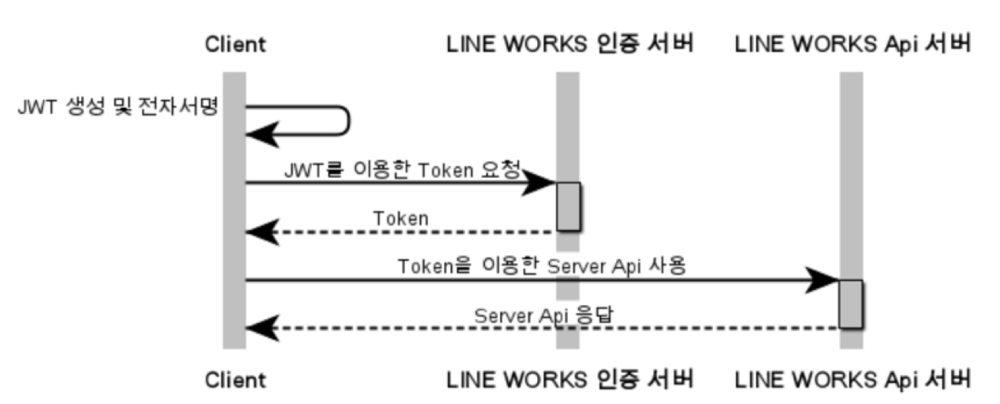
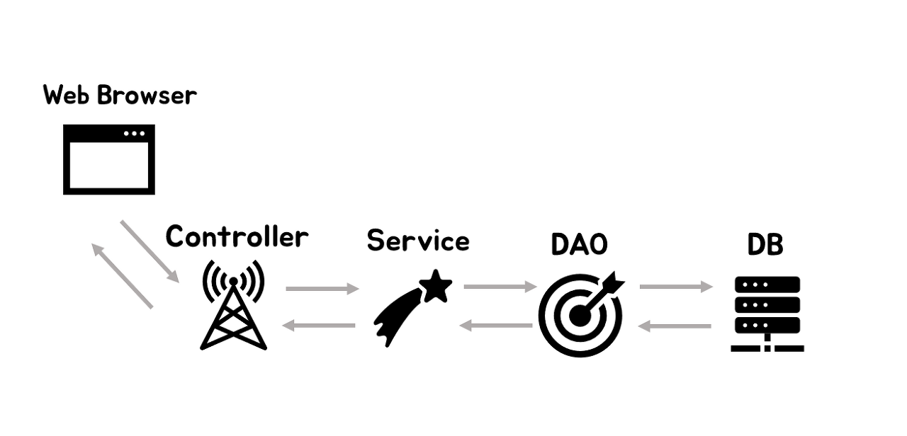
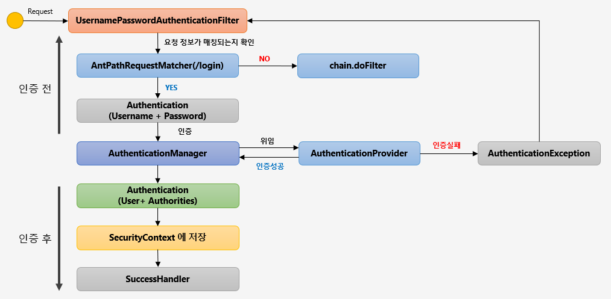
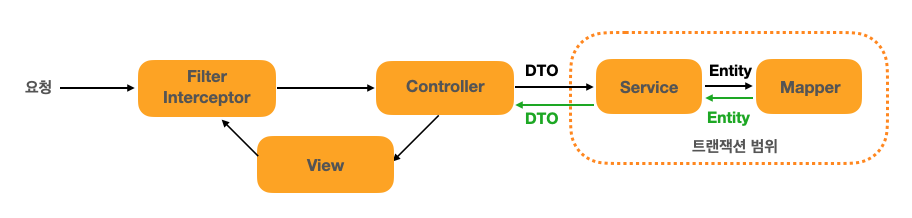

설문조사 사이트
설문조사 및 게시판 사이트
Spring Framework를 사용하여 진행한 설문조사 및 게시판 사이트입니다. vurtify plugin을 기준으로 만들었습니다.
1. 사이트 구조 설계
- 회원가입
- 로그인
- 로그아웃
General
- 회원 목록
- 자세히 보기
- 회원 수정
- 회원 삭제
User
- 게시물 목록
- 게시물 작성
- 자세히 보기
- 게시물 수정
- 게시물 삭제
- 댓글
- 게시물 검색
Board
- 설문지 만들기
- 설문 작성
- 설문 삭제
- 설문 통계
Survey
2. 제작
1) 로그인

로그인 시 유저를 인증하고 식별하기 위해 JWT 방식을 사용하였습니다. JWT에 ID와 PW를 보내 로그인을 요청하면 Header, PayLoad, Signature를 정의하는데, 이 때 Payload에 Id나 회원 등급 등의 정보를 담아서 게시물의 수정 권한이나 설문 답변의 통계자료 등 등급에 따른 접근에 제한을 두었습니다.
vs code에서 HTTP 요청을 처리하기 위한 모든 작업에서 axios를 사용하였습니다. axios로 받아온 데이터를 state에 새로 정의한 UserInfo에 값을 넣어서 필요할 때 마다 사용하였습니다.
2) 목록
모든 목록 작업은 router로 페이지를 이동하여 created()에서 ditpatch를 이용해 목록을 바로 읽을 수 있도록 하였고, 이 때 pagination 작업을 위해 GET 방식으로 현재 page 값을 넘겨줍니다. Spring boot는 MVC 구조를 따르기 때문에 Controller에서 page값을 받아서 page 정보를 계산하는 함수를 실행시킵니다. User Domain에 pagination의 정보를 User에 담을 수 있게 추가한 후 state에 목록과 page 정보를 담아주었습니다.
3) 게시물 작성
게시물 작성 시 원 게시물은 group의 변수를 만들고 LAST_INSERT_ID를 이용하여 게시물의 Idx와 group 값이 같게 하였습니다. 이 게시물에 답글을 할 경우엔 원 게시물의 group 값을 가져와서 원글과 같은 group 값과 같게합니다. 이는 Order By를 이용하여 최근 작성 시간별로 정렬할 경우 답글이 원 게시물의 바로 아래에 오도록 하기 위함입니다. 이렇게 하기 위해서는 변수가 더 필요하기 때문에 order의 변수를 하나 더 만들었습니다. 원 게시물의 order 값은 무조건 1이 되도록 하였고 답글이 달릴 경우 답글은 자신이 답하고자 했던 게시물의 order 값을 가져와서 1을 증가시킵니다. 답글에 대한 답글을 할 경우 원글을 제외하고 본인의 답글보다 order 값이 큰 답글들의 order을 1씩 더 증가시켜 order 값을 기준으로 정렬할 수 있도록 관리하였습니다. 마지막으로 depth의 변수도 만들어 답글의 답글 또한 순서에 맞게 하였습니다.
게시물 작성 시 이미지 파일 업로드를 하기 위해 v-file-input을 사용하였고 Spring boot에서 UUID를 이용해 랜덤한 업로드명을 부여하여 업로드명끼리 겹치지 않도록 하였습니다. 업로드명과 함께 파일 원본 이름도 같이 db에 저장하였고 resultMap과 collection을 이용하여 리스트화 하여 값을 한번에 불러왔습니다. state에 array 방식으로 변수를 만들어서 다중 파일 업로드도 가능하도록 하였습니다.
4) 자세히 보기
모든 detail 작업에서 등급에 따라 권한을 달리하기 위해서 v-show를 이용하여 접근을 막았습니다. 회원은 Role을 USER만, 관리자는 USER와 ADMIN 둘 다 가지고 있기 때문에 ADMIN Role을 가지고 있는 경우만 수정에 접근하지 못하게 막을 수 있습니다. 삭제를 제외한 모든 작업의 접근을 막았기 때문에 관리자 등급은 회원이 작성한 게시물을 보거나 삭제는 가능하지만 수정은 할 수 없습니다.
반대로 설문 통계자료나 회원 등급 변경은 관리자만 접근할 수 있습니다. 이 경우에는 Spring Security를 사용하여 Controller에 @PreAuthorize("hasRole('ROLE_USER') or hasRole('ROLE_ADMIN')") annotation을 추가하였습니다. 회원은 ADMIN Role을 가지고 있지 않기 때문에 통계자료에 접근할 수 없습니다.
4-1) 회원 자세히 보기
회원 detail에서 등급 변경 시 Admin Role을 부여하여 두 가지의 Role을 가지고 있게됩니다. 즉, @PreAuthorize("hasRole('ROLE_USER')") 뿐만 아니라 hasRole('ROLE_ADMIN')" 에도 접근 가능하도록 설계하였습니다. 회원의 등급이 많을 때 등급에 따라 접근을 제한할 수 있습니다.
4-2) 게시물 자세히 보기
게시물 detail에서는 댓글을 쓸 수 있도록 하였으며 게시물과 마찬가지로 group, order, depth변수를 이용하여 최근의 댓글이 가장 위로 오도록 하였습니다. 댓글에 대댓글을 달 때와 댓글의 수정을 할 경우 별도의 화면전환 없이 바로 수행할 수 있도록 Components에서 import하여 한 화면에 같이 설계하였습니다. component마다 v-show값을 조정하여 수행하고자 하는 작업의 화면만 나타나게 하였습니다. 댓글 수정 시 v-model을 이용하여 이전에 작성했던 댓글이 무엇이었는지 볼 수 있도록 하였습니다.
5) 게시물 검색
게시물 검색은 제목, 제목+내용, 작성자에 대한 검색이 가능하도록 하였고 SQL에서 choose 와 when을 이용하여 and like의 내용을 검색 조건에 따라 분류하였습니다. 제목+내용은 검색어가 제목과 내용 둘 다 포함되는 것이 아닌 제목 또는 내용에 포함되는 것이 검색되도록 하였습니다.
6) 설문지 작성
설문지 작성은 구글 설문지 작성을 참고하여 객관식, 주관식, 체크박스, 드롭박스를 설문 형식으로 사용할 수 있습니다. 각 형식마다 버튼을 만들어서 원하는 형식만 사용할 수 있도록 하였습니다. components에 각 형식을 vue file로 만들어 두고 componentList를 만들어 각 버튼을 누를 때 마다 List에 components가 추가되도록 설계하였습니다. 주관식을 제외한 각 형식의 선택항목은 ItemList에 포함되고, 모든 질문은 QuestionList에 포함됩니다. 앞서 만들어진 ItemList도 QuestionList에 포함시켜 다시 한 번 Survey에 포함시켜 한번에 데이터를 보내줍니다. Spring boot에서 Map과 List안에 데이터를 나눠서 담은 후 for문을 통해 질문과 선택항목들을 각각 db에 저장합니다.
QuestionList를 survey에 담을 때 동시에 설문 형식을 새로운 변수인 type을 만들어 같이 담았습니다. 설문 창은 설문지 작성과 역으로 ItemList와 QuestionList와 type을 Survey에 담아 값을 넘겨주게 하였습니다. v-for를 이용해 형식 목록에 있는 순서대로 설문지가 되도록 하였습니다.
7) 설문 통계
설문 통계 창은 각 설문지마다 작성한 회원의 목록과 그 회원의 설문 답안을 확인할 수 있도록 하였습니다. 설문지마다 질문에 대답한 내용을 AnswerList에 담아 db에 저장하였고, 설문 작성과 마찬가지로 역순으로 AnswerList와 QuestionList를 Survey에 담아 값을 넘겨주었습니다. vs code에서 disabled를 사용하여 값을 변경할 수 없게 하였습니다. 또 vue-google-charts에서 pie chart를 이용하여 주관식을 제외한 답변들을 차트화 하여 비율과 대답횟수를 알기 쉽도록 하였습니다. 차트 또한 components에서 import 하여 화면 전환없이 볼 수 있도록 하였습니다. option에 sliceVisibilityThreshold: 0를 추가하면 갯수가 0인 항목도 차트 목록에 포함됩니다.
http://13.124.33.26을 통해 설문조사 사이트를 확인할 수 있습니다. 관리자 ID=a PW=123, 회원 ID=zxc PW=zxc